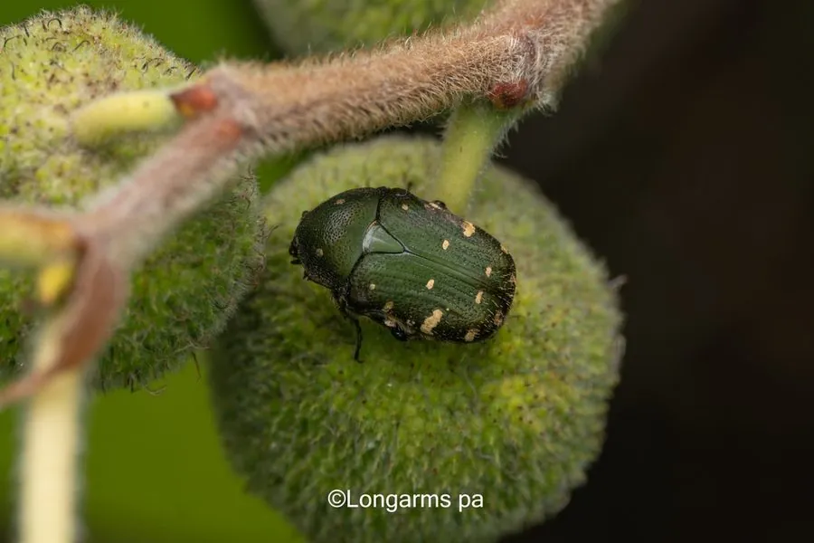

昆虫 · 动物界
小青花金龟 Oxycetonia jucunda

体背翠绿带铜色光泽、鞘翅缀白色绒斑的小型金龟，成虫访花吸蜜，幼虫生活在腐殖质中。
- 分类
- 门节肢动物门纲昆虫纲目鞘翅目科金龟科属小青花金龟属
- 栖息环境
- 果园、菜地、花圃、路旁花丛与腐殖质丰富的土壤
- 地理分布
- 中国南北各地及日本、朝鲜半岛、俄罗斯远东
- 保护级别
- 常见种，无保护需求
物种志
小青花金龟的成虫体长约一至一点五厘米，体背翠绿色至铜绿色，带有金属光泽，鞘翅和前胸背板上散布多个白色绒斑，斑纹排列如碎花，因而得名。腹面密生灰白色绒毛，足粗壮，胫节外缘有齿。幼虫体白而弯曲，头部黄褐，生活在腐熟的堆肥和土壤表层。
它分布于中国南北各地以及日本、朝鲜半岛和俄罗斯远东，栖息在果园、菜地、花圃和路边花丛。成虫在春夏季出现，白天活动，喜在蔷薇、山楂、女贞等花上取食花瓣和花蜜，常把花冠咬得残缺，受惊时振翅飞走或跌落地面装死。幼虫以腐殖质和植物根系为食，老熟后在土中化蛹，一年发生一代。成虫数量大时会影响果树授粉与观赏花卉。
形态与习性
- 体长约一至一点五厘米
- 体色翠绿至铜绿，具金属光泽
- 白斑鞘翅与前胸背板散布白色绒斑
- 食性成虫取食花瓣与花蜜，幼虫食腐殖质
- 世代一年一代，老熟幼虫在土中化蛹
- 习性白天访花，受惊跌落装死
趣味知识
- 它背上的白点是一簇簇白色绒毛，擦掉之后下面仍是翠绿的甲壳。
- 它专挑开得正好的花下口，花瓣被咬得七零八落，果农颇为头疼。
- 幼虫住在腐熟的堆肥里，把有机质分解成植物能吸收的养分。